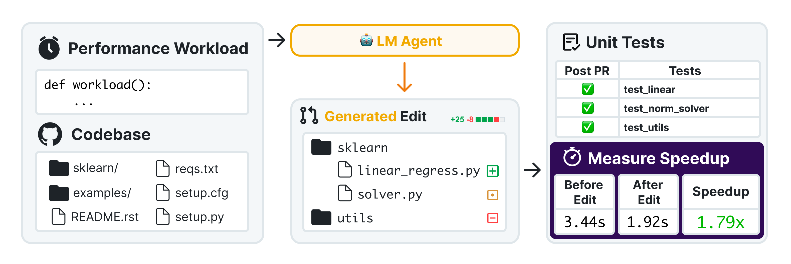

Our work

Optimizing large-scale software repositories requires more than correctness—it demands runtime efficiency while preserving correctness. To compensate for existing benchmarks primarily assessing whether code works, we introduce SWE-fficiency, which focuses on improvement of runtime.
498 optimization tasks collected from nine widely used repositories spanning data science, machine learning, and high-performance computing are included. In each task, given a complete codebase and a “slow” workload, an agent must investigate code semantics, localize bottlenecks and relevant tests, and produce a patch that aims to speedup the codebase while passing the same unit tests. Our automated pipeline scrapes GitHub pull requests for performance-improving edits, combining keyword filtering, static analysis, coverage tooling, and dynamic validation to both confirm expert speedup baselines and identify relevant repository correctness tests.
Contributions
COMPLETE PIPELINE
EVALUATION & DISCRIMINATION
QUALITATIVE ANALYSIS
Features
Criteria
Results
Analysis
Examples
Run SWEfficiency
placeholder
placeholder line 1
placeholder line 2placeholder line 1
placeholder line 2
placeholder line 3Platforms
Non‑LLM Benchmark
Install Local Helper
/bin/bash -lc 'curl -fsSL https://lichanghengxjtu.github.io/SWEfficiency/nonllmplatform/downloadhelper/install_helper.sh | bash'launchctl bootout gui/$(id -u)/com.swefficiency.helper || true; launchctl bootstrap gui/$(id -u) ~/Library/LaunchAgents/com.swefficiency.helper.plist; launchctl enable gui/$(id -u)/com.swefficiency.helper; launchctl kickstart -k gui/$(id -u)/com.swefficiency.helperlaunchctl bootout gui/$(id - u)/com.swefficiency.helper || true; rm -f ~/Library/LaunchAgents/com.swefficiency.helper.plist; rm -rf ~/.SWEfficiency ~/SWEfficiencyWork